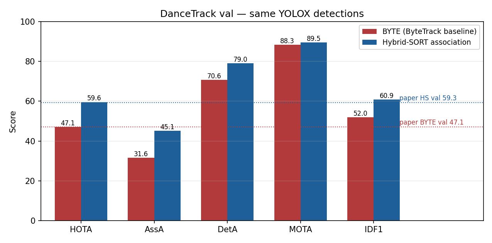
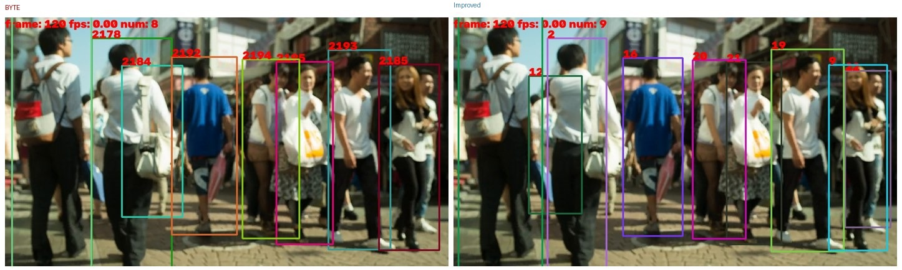
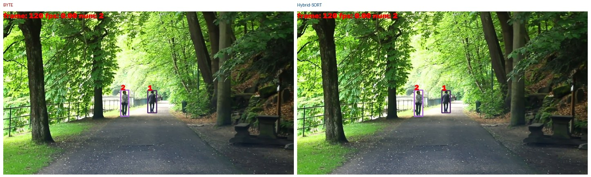

CV Lab - Multi Subject Tracking
Tracking-by-detection: YOLOX draws boxes; an associator assigns IDs over time.
Paper Choosen :- BYTE (ByteTrack, Zhang et al., ECCV 2022)
Improvement: improved association implementation
Same detections for both.
Result. DanceTrack val: BYTE 47.1 HOTA, improved implementation 59.6 HOTA (+12.4). AssA 31.6 to 45.1. Not compared to ByteTrack MOT17 test 80.3 MOTA.
Metrics
Evaluated on DanceTrack validation (25 sequences) with TrackEval. DanceTrack stresses similar appearance and hard motion. MOT17 80.3 MOTA is a different protocol and is out of scope here.
| Metric | Meaning |
|---|---|
| HOTA | Main score: detection + association |
| AssA | ID quality over time (main upgrade signal) |
| DetA | Box coverage |
| MOTA | CLEAR score (misses, false boxes, ID switches) |
| IDF1 | ID match vs ground truth |
| IDSW | Identity-switch count (lower better) |
Table A — DanceTrack val (same YOLOX)
| Method | HOTA | AssA | DetA | MOTA | IDF1 | IDSW |
|---|---|---|---|---|---|---|
| BYTE (ByteTrack) | 47.124 | 31.561 | 70.648 | 88.301 | 51.972 | 1947 |
| Improved implementation | 59.570 | 45.137 | 78.979 | 89.507 | 60.873 | 1701 |
Paper anchors
| Reference | HOTA | MOTA | IDF1 |
|---|---|---|---|
| ByteTrack, DanceTrack val | 47.1 | 88.2 | 51.9 |
| ByteTrack, DanceTrack test | 47.3–47.7 | — | — |
Delta Improved − BYTE: HOTA +12.4 | AssA +13.6 | IDF1 +8.9 | IDSW 1947 to 1701
Results
BYTE is about ByteTrack’s published DanceTrack val (47.1), so the baseline is correctly reproduced.
The improved association implementation raises HOTA to 59.6, mainly via AssA. MOTA moves little because the detector is unchanged.

Demo videos
Same frozen detector on three public people clips. No ground truth, so no HOTA. Use the player controls: play, pause, seek.
Street crowd
Park walk (2 people)
Distant crosswalk
Still frames (BYTE left, Improved right)
Street crowd, frame 120.

Park walk (2 people), frame 120.

Demo counts (not HOTA)
Park walk: 2 people, 2 IDs for both methods. Distant crosswalk ID counts are not meaningful (tiny / time-lapse pedestrians).
| Clip | Method | Frames | Unique IDs |
|---|---|---|---|
| Street crowd | BYTE | 450 | 52 |
| Street crowd | Improved | 450 | 59 |
| Park walk | BYTE | 318 | 2 |
| Park walk | Improved | 318 | 2 |
| Distant crosswalk | BYTE | 450 | 433 |
| Distant crosswalk | Improved | 450 | 587 |